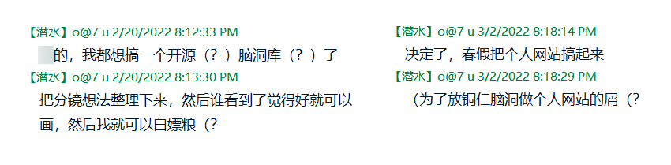

三月第一周Time Log
2022年3月7日
虽然撑死只是个MVP，但话痨期莜已经攒了好多话想说了。
天啊，竟然这就到了可以写开发感想的时候。
第一次口嗨说要做 “开源脑洞库“ 是2月20日，正式下定决心要做是在3月2日晚上八点，找模板是在3月3日到3月4日的半夜，写第一行码是在3月5日零点十五分，MVP是在……写完这篇博客的时候，3月9日凌晨。
什么叫行动力啊（战术后仰）

然而我的手书脑洞目前只有1/4.5放进了脑洞库（其他都还需要额外花时间整理），某种程度上也是违背了开发初衷（bushi）。会放的，都会放的，咕咕咕。
其实与其说是开发，我觉得做这个网站的过程更接近于 “回顾” “自我剖析” 和 “创作” 毕竟代码全是靠拼拼贴贴模板自带的部分或者Google，根本没有在自己思考。回顾就是看自己从电脑的犄角旮旯里翻出来的各种东西。评价和总结完成的作品，复盘没完成的作品当初半途而废的原因，以及把一些模糊的概念稍微具体化一点。自我剖析主要是发生在写 “关于期莜” 板块的时候，短短的三小段自我介绍我删删改改写了绝对不止一个小时，下面那些不太正经的个人状态耗时也不短。我是谁，我喜欢什么，我接下来要做什么——就是在做这个板块的时候我突然意识到，上一次认真思考这些问题可能是写大学申请文书的时候了。虽然程度远远不及那时候，但好歹也是时隔三年多再次静下心来了解了一下自己。
至于创作的部分，我的理解就是 “寻找把前两点有效呈现出来的方式”。我没有网页设计经验，不如说就没有任何设计经验，所以这一块就只能凭直觉。好在这模板本身很合我的审美废话啊这是我自己挑的啊，至于交互方面，好歹也是十几年的网民了，用着舒不舒服自己点点看不就知道了，于是靠一些trial & error对不起，我毕竟不会html，原谅我吧把模板改得面目全非以后做出了这么一个 “把想放的东西都放上去了用着也还行” 的东西。
呃啊，我废话好多。长话短说就是，这网站我做得很开心也觉得很有意义。
最后来构思一下接下来要实现什么。留言板还没有做出来且优先度不高，因为模板并没有自带handle实时评论的功能，然后我Google了一下感觉看上去是不能在html、js、css、php一问四不知的状态下搞定了，而我也不觉得短期内这个网站的访客里会出现太多比起私信或者邮件更想公开评论的人。所以就先搁着吧。作品集还有两件没上，都是写作，也就是 “看的人会相对少而网页排版又相对费事” 的内容，于是优先度也放低。
说了这么多借口就是在为优先更新脑洞库做铺垫嘛！x 一方面脑洞库需要更新的内容真的很多（手术脚本*4，开发想法*1，零碎临摹作*1，零碎调教*1），另一方面请参考第三、四段之间的那张插图（？）虽然我觉得想靠这个白嫖到粮就是在做梦，但万一呢。
哦对了，如果有妈咪能设计出比现在这个更像样的logo请务必联系我（